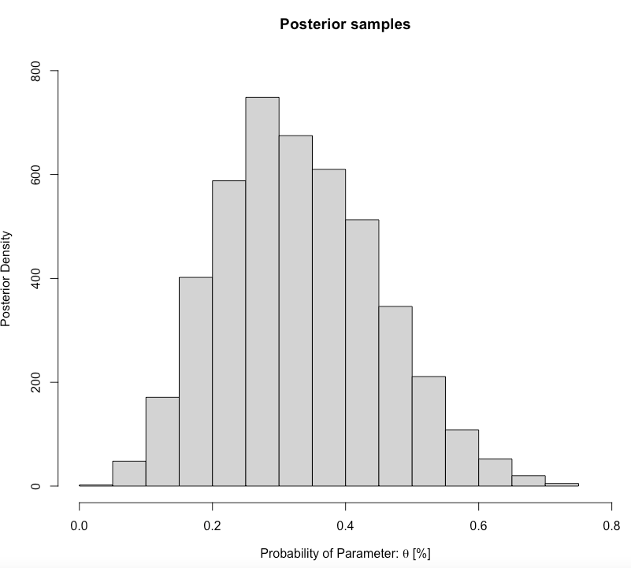
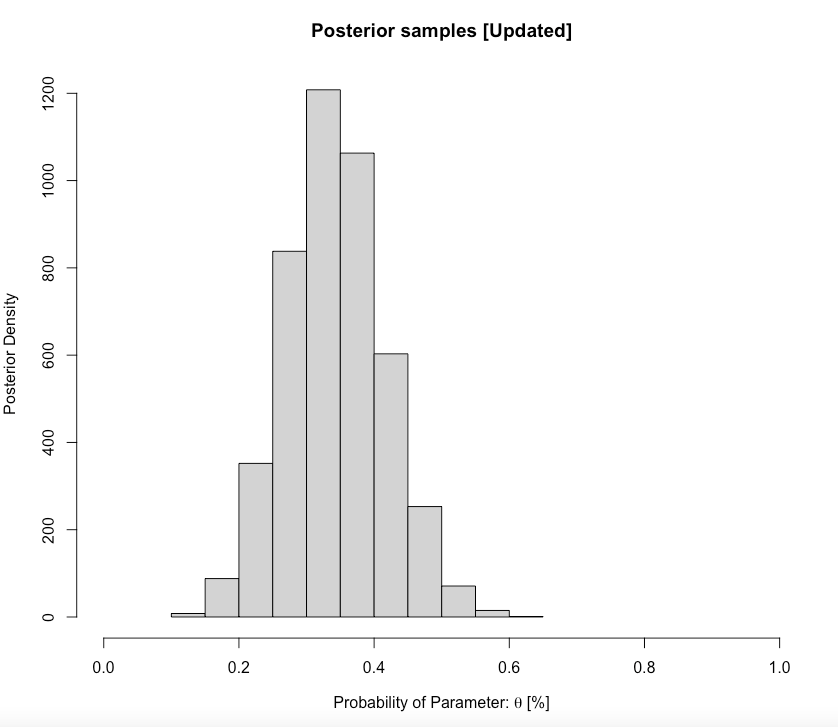

2 Introduction to Bayesian Inference using Stan
2.1 Introduction
2.1.2 Learning outcomes
Today’s session aims to introduce you to the basic Stan programming etiquette for Bayesian analysis in RStudio using Stan as an Interface, and producing output and interpreting it’s results. By the end of this session, you should be able to perform the following:
- Develop basic Stan code
- Know how to write and compile a Stan Program to compute the posterior distribution for simple parameters (i.e., mean, standard deviation, a proportion etc.,)
- Know how to interpret the results churned from a Stan
You can follow the live walkthrough demonstration delivered in the first 1-hour of the practical, and then use the practical session to try the practical tutorials yourself by following the instructions and trying out the tasks.
2.1.4 Datasets & setting up the work directory
Since, this is our first practical lesson for Day 1, let us create a new folder CPD-course at the desktop location of our computer. Now, create a sub folder called “Day 1” within the CPD-course folder. Here, we will store all our R and Stan scripts. Set your work directory to the Day 1 folder.
For Windows, the code for setting the work directory will be:
For MAC, the code for setting the work directory will be:
2.1.5 Loading packages
To start writing scripts for Bayesian analysis, we will need to load the rstan package.
Note that when you load rstan from cran, you will see some recommendations on using multiple cores for speeding the process. For the best experience, we highly recommend using this code:
This tells RStudio to use multiple core for parallel processing whenever Stan is being implemented. Every time you want to use Stan - make sure to load parallel::detectCores() and rstan_options code.
2.2 Basic building blocks I: About Stan Programming
This section describes how to code up a basic Stan model. This section forms the foundation for later, and more complex models.
2.2.1 Opening a Stan Script in RStudio
Alright, let’s open a Stan file. You can do this by clicking and selecting File > New File > Stan File

When you open a new Stan file, you will be greeted with an untitled script which contains the following bits of code:
//
// This Stan program defines a simple model, with a
// vector of values 'y' modeled as normally distributed
// with mean 'mu' and standard deviation 'sigma'.
//
// Learn more about model development with Stan at:
//
// http://mc-stan.org/users/interfaces/rstan.html
// https://github.com/stan-dev/rstan/wiki/RStan-Getting-Started
//
// The input data is a vector 'y' of length 'N'.
data {
int<lower=0> N;
vector[N] y;
}
// The parameters accepted by the model. Our model
// accepts two parameters 'mu' and 'sigma'.
parameters {
real mu;
real<lower=0> sigma;
}
// The model to be estimated. We model the output
// 'y' to be normally distributed with mean 'mu'
// and standard deviation 'sigma'.
model {
y ~ normal(mu, sigma);
}Do not worry about that - it is just some formalities put there by default by the developers behind rstan. You can delete everything you see in this script as we will build our own basic script from scratch.
Once you have deleted the default information save the empty file in the Day 1 folder naming it Predicting a proportion.stan. Whenever you are saving Stan programme in RStudio always make sure to save it with a .stan ending.
2.2.2 Basic structure of a Stan script in RStudio
A typical Stan program consist of the following 6 blocks:
- Data
- Transformed data
- Parameters
- Transformed parameters
- Model
- Generated quantities
Out of these 6 blocks, the Data, Parameters and Model block must be specified. These are three compulsory blocks needed in any Stan script in order for a Bayesian model to work within the rstan environment. Let us define what these three important blocks are.
FIRST: The data block allows the user to declare how the model reads the dataset from RStudio by specifying the sample size N or observations; the number of k parameters that needs to be estimated; the names or list of independent variables for the corresponding parameters (e.g., coefficients); as well as data constraints etc., A data block is specified accordingly as:
data {
}It is within these curly brackets will specify these details of our dataset. They must be precise as it will have to correspond with the data that is loaded in RStudio’s memory.
SECOND: The parameters block allows the use to declare all primitive unknown quantities, including their respective storage types, dimensions, and constraints. The parameters that go here are the ones we want to infer or predict - e.g., includes the mean, variance, sd, coefficient and many more. A parameters block is specified after the data block:
data {
}
parameters {
}THIRD: The model block allows the use to declare and specify the sampling statements for the dependent variable (i.e., likelihood function) and parameters (i.e., priors) to be used in the model. A model block is specified after the parameters block:
data {
}
parameters {
}
model {
}Note that adding a double forward slashes // lets the user add a comment to script. Let add comments to the blocks:
// Add comments after double forward slashes
data {
// data block
}
parameters {
// parameters block
}
model {
// model block
}Important Notes: Since, the other blocks are not compulsory - we will leave them out for now. But we will come back and explain what those remaining blocks are in Day 2 and 3. Now, save your Stan script.
2.3 Basic building blocks II: Data types and constraint declarations
In Stan, all parameters and data must be defined as variables with a specific type. Note, this is quite a pain but going through this step allows rstan to perform really fast. There are four basic data types:
int: for integers, used for specifying the sample size, and is applied to discrete variablesreal: for continuous, is applied to continuous variables (i.e., ratio or interval)vector: for a column vector ofrealsmatrix: for a matrix ofreals
For constraints, we specify them on variables. For example, if we are dealing with a proportion p we will code it as real<lower=0, upper=1> p tells Stan that p can be any value from 0 to 1, inclusive. Note that specifying constraints really help speed Stan up so use them wherever possible.
Lastly, you can create arrays of variables. For example, real p[10] tells Stan that p is an array of 10 real values. We can also create a matrix to represent a set of independent variables. Now that we have discussed these points - let work with an actual demonstration to show data types and constraints work.
2.4 Basic building blocks III: Developing our model
PROBLEM: Last year, in the advanced GEOG0125 course, there was 13 students enrolled. It was Anwar’s first time being a teacher on the course, and hence was quite curious to know what proportion of students will pass with a distinction. Since, he has no data of the pass rates - therefore has no prior knowledge. First, he assumes that the proportion of those passing with a distinction comes from a Beta distribution that is uniform Beta(1.0, 1.0). In term 3, after tedious marking of reports, he observes that 4 students (out of the total: 13) passed with flying colours. What is the posterior distribution of those getting a distinction for GEOG0125?
Let us build our first model that predicts the posterior distribution of those passing the GEOG0125 module with a distinction. Let us extract the information:
- Total sample size is 13 (N) [i.e., denominator]
- The outcome is the number of students who passed (70% and above) is 4 (p) [i.e., numerator]
- Data: Proportion (or prevalence) of distinction grades is 4/13, but this is just one instance (it could have been these other likely outcomes: 0/13, 1/13, 2/13, 3/13, 4/13, …, 12/13 or even 13/13). Let us represent proportion of distinction grades with some probability distribution \(\theta\) which has a Binomial distribution (likelihood function).
- There is no prior knowledge, but we are dealing with a proportion here, so a Beta distribution is best for this problem and should be assigned as a prior. We are assuming that it’s PDF has a uniform pattern i.e., Beta(1.0, 1.0) because all these instance (i.e., 0/13, 1/13, 2/13, 3/13, 4/13, …, 12/13 or even 13/13) have a equal chance of happening. This is an example of an uninformative prior
We can code this information in Stan.
FIRST: We specify the total number of student as integer int N which cannot be a negative number in the data block. Also, we also need to specify the number of students that passed as an integer int p which cannot be a negative number in the data block too.
data {
int<lower = 0> N;
int<lower = 0> p;
}SECOND: For the parameters block, here we will need to specify the name of the parameter that we want to infer. Here, its \(\theta\) which is the proportion of those who got a distinction in GEOG0125. Note that \(\theta\) follows a beta distribution and is therefore translated as a probability as a real value that is within the range of 0 to 1, inclusive.
data {
int<lower = 0> N;
int<lower = 0> p;
}
parameters {
real<lower=0, upper=1> theta;
}THIRD: For the model block, here we will need to define our posterior distributions. Here, we need to state that p likelihood function is sampled from a binomial distribution as a function of N and \(\theta\) (binomial(N, theta)). We also have to say \(\theta\) is sampled from a beta distribution that is uniform. The model block will be:
data {
int<lower = 0> N;
int<lower = 0> p;
}
parameters {
real<lower=0, upper=1> theta;
}
model {
p ~ binomial(N, theta); // our likelihood function or observation model
theta ~ beta(1.0, 1.0); // our prior distribution alpha = 1 and beta = 1
}COMPLIMENTS: Well done, we have built our first Bayesian model. Let save it the script, what we need to do is compile and run it through RStudio to get our results.
2.5 Basic building blocks IV: Compiling our Stan code in RStudio
Now, let us turn our attention to RStudio. The Stan script needs to be compiled from an R script. We will first need to create a list object using list() to connect the data to the information specified in the data before running the function stan() to the Bayesian model to get the results. The N and p will need to defined in the list object.
Now, using the stan() to compile and obtain the posterior estimation of the proportions of students passing with a distinction:
# the directory needs to be set to where you save the datasets and Stan script
prediction.passes = stan("Predicting a proportion.stan", data=dataset, iter=3000, chains=3, verbose = FALSE)Some notes on the above code’s arguments:
data=we are pushing the data we created from thelist()to the Stan script. Stan is calling it.iter=we are asking thestan()to perform 3,000 iterations on each chain to generate the posterior samples. The chain can be a MCMC, NUTS or HMC algorithm (NUTS No-U-turn sampler is the default)chains=we are asking thestan()function to perform 3 chains (i.e., any of these algorithms can be stated in the function: i.e., MCMC, NUTS & HMC)
The resulting output can be printed with the function print(). Here, we are going to print the mean, standard error in mean, SD and the IQR ranges with 95% limits (i.e., 2.5% and 97.5%):
We obtain this summary table:
Inference for Stan model: Predicting a proportion.
3 chains, each with iter=3000; warmup=1500; thin=1;
post-warmup draws per chain=1500, total post-warmup draws=4500.
mean se_mean sd 2.5% 25% 50% 75% 97.5% n_eff Rhat
theta 0.33 0.00 0.12 0.12 0.24 0.32 0.41 0.58 1495 1
lp__ -10.08 0.02 0.73 -12.21 -10.26 -9.80 -9.61 -9.55 1879 1
Samples were drawn using NUTS(diag_e) at Thu Jan 12 14:39:10 2023.
For each parameter, n_eff is a crude measure of effective sample size,
and Rhat is the potential scale reduction factor on split chains (at
convergence, Rhat=1).What does it all mean? The top part states that 3 chains were run for 3000 iterations. However, the first 1500 samples generated from each chain were discarded as warm-up, meaning that only 1500 samples from each chain were kept, resulting 4500 (1500x3) total post-warm-up sample draws. The output shows the summary statistics for our \(\theta\). The lp__ is the log-probability - which is used to quantify how well the model is for the data but, in my opinion, its not a useful estimate. Instead, use the effective sample size n_eff and Rhat. If the Rhat is less than 1.1 for all parameters - it means that the estimation of our parameters are fine.
2.6 Basic building blocks V: Extract posterior samples and interpretation
At this point, let us extract the posterior samples and graph them to understand it posterior distribution. We use the extract() function from the rstan package, and graph them:
# extracting the samples (it should be 4500)
theta.pass_draws <- rstan::extract(prediction.passes, 'theta')[[1]]
# create a graph i.e., histogram
hist(theta.pass_draws, xlim = c(0,0.8), ylim = c(0,800),
main= "Posterior samples", ylab = "Posterior Density", xlab = expression(paste("Probability of Parameter: ", theta, " [%]")))
We want to compute the posterior mean, with the 0.025 and 0.975 quantiles (these limits are referred to as 95% credibility limits (95% CrI)). Here is how we compute them:
# Calculating posterior mean (estimator)
mean(theta.pass_draws)
[1] 0.3305062
# Calculating posterior intervals
quantile(theta.pass_draws, probs=c(0.025, 0.975))
2.5% 97.5%
0.1239263 0.5800643 Interpretation: The predicted proportion of students passing the GEOG0125 from our sample posterior distribution was 0.3305 (33.05%). Our predictions, with 95% credibility, can be within the limits of 0.1239 and 0.5801. Formally writing as \(\theta\) = 33.05% (95% CrI: 12.39-58.01%).
2.7 Basic building blocks VI: Updating our prediction with new information
We can use the 0.3305 as our new prior as opposed to using a uniform again to make an updated prediction. The updated beta distribution takes a new form of Beta(5, 10) centered on 0.3305. This is an informative prior because we have information now. This was derived from multiplying the likelihood function (i.e., Binomial(13, 4)) with the prior (Beta(1,1)) results in a Beta distribution again. This is known as a conjugate.
We can use this information in fact to make a prediction on the current 2022/23 cohort who can potentially get a distinction in GEOG0125 for this year? Let’s see:
- This year, the total sample size is 26 (N)
- Assuming roughly a third (like last year) will probably get a distinction equates to 9 (p)
- Let us represent the proportion of distinction grades with some probability distribution \(\theta\) with a Binomial distribution (likelihood function) [Binomial(26, 9)].
- We have prior knowledge of last year’s proportion (0.3305) which has a Beta distribution [Beta(5, 10)] - this is our new informative prior
- Let updates the codes:
Updated dataset in our RScript
Updated Stan script
data {
int<lower = 0> N;
int<lower = 0> p;
}
parameters {
real<lower=0, upper=1> theta;
}
model {
p ~ binomial(N, theta); // our likelihood function or observation model
theta ~ beta(5, 10); // our prior distribution updated to alpha = 5 and beta = 10
}Obtaining updated posterior samples by compiling new Stan script
predicting.passes.updated = stan("Predicting a proportion updated.stan", data=dataset.updated, iter=3000, chains=3, verbose = FALSE)
print(predicting.passes.updated, probs=c(0.025, 0.25, 0.5, 0.75, 0.975))Updated output summary table
Inference for Stan model: Predicting a proportion.
3 chains, each with iter=3000; warmup=1500; thin=1;
post-warmup draws per chain=1500, total post-warmup draws=4500.
mean se_mean sd 2.5% 25% 50% 75% 97.5% n_eff Rhat
theta 0.34 0.00 0.07 0.20 0.29 0.34 0.39 0.49 1956 1
lp__ -26.83 0.02 0.74 -28.94 -26.97 -26.54 -26.37 -26.32 1582 1
Samples were drawn using NUTS(diag_e) at Thu Jan 12 17:20:47 2023.
For each parameter, n_eff is a crude measure of effective sample size,
and Rhat is the potential scale reduction factor on split chains (at
convergence, Rhat=1).Histogram of posterior samples’ distribution
# extracting the samples (it should be 4500)
theta.pass_draws.new <- rstan::extract(predicting.passes.updated, 'theta')[[1]]
# create a graph i.e., histogram
hist(theta.pass_draws.new, xlim = c(0,1),
main= "Posterior samples [Updated]", ylab = "Posterior Density", xlab = expression(paste("Probability of Parameter: ", theta, " [%]")))
Obtain updated posterior proportion and 95% CrI
# Calculating posterior mean (estimator)
mean(theta.pass_draws.new)
[1] 0.3420825
# Calculating posterior intervals
quantile(theta.pass_draws.new, probs=c(0.025, 0.975))
2.5% 97.5%
0.2027673 0.4935101 Interpretation: For the current cohort, the predicted proportion of students passing the GEOG0125 from our updated posterior distribution was 0.3421 (34.21%). Our predictions, with 95% credibility, can be within the limits of 0.2027 and 0.4935. We can formally write this as \(\theta\) = 34.21% (95% CrI: 20.27-49.35%).
2.8 Tasks
2.8.1 Task 1 - Low-level arsenic poisoning in Cornwall, UK
Try this first problem in Stan: Suppose, in a small survey, a random sample of 50 villagers from a large population in Cornwall were at risk of arsenic poisoning due to long-term low-level environmental exposure status were selected. Each person’s disease status (i.e., metallic toxicity) was recorded as either Diseased or None. 19 of the respondents have found to be diseased. The distribution of the prevalence is assumed to be of a Beta distribution with Beta(3,5).
What is the predicted posterior prevalence of arsenic poisoning in Cornwall and its 95% Credibility intervals?
2.8.2 Task 2 - Body mass index (BMI) problem
Try this second problem in Stan: The mean BMI value is 23 with SD of 1.2. Simulate sample of 1000 with BMI values based on this distribution N(23, 1.2) and perform Bayesian inference.
What is the posterior mean BMI and its 95% Credibility intervals?
Hints:
- In the R script, use the function
rnorm()to generate your sample of 1000 BMI points - In the R script, create a
list()withNandbmidefined - In the Stan script, define the data block in accordance to the
list()object - In the Stan script, the
bmivalues are measured outcome. Code this in the model block as a likelihood function using thenorm(mu, sigma)notation - In the Stan script, use the parameter block, and make sure to code your
mu(mean) andsigma(standard deviation) as real (non-negative) numbers
Note: Solutions for task 1 and 2 will be made available later today